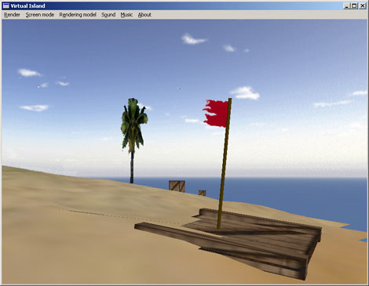
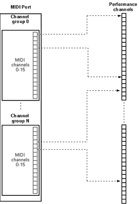
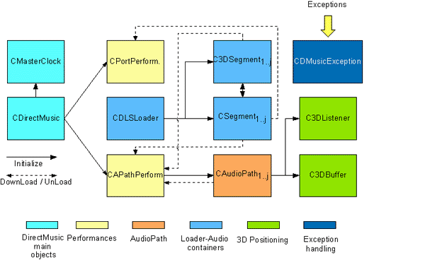
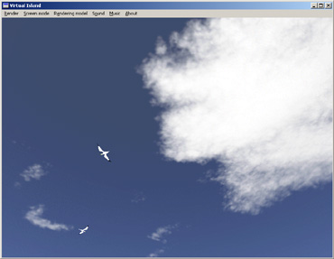
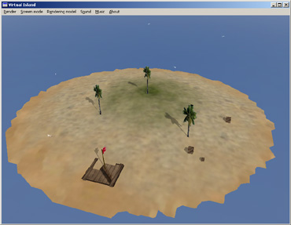

Title: Audio playback processing with DirectMusic Author: Carlos Jiménez de Parga Email: cjimenez@isometrica.net Environment: VC++ 6.0-7.0, Win 98, 2000, XP Keywords: Win32, MFC, DirectX Level: Intermediate" Description: An extension of the DirectMidi class library for audio handling Section Audio SubSection DirectMusic

0. Index
1. Introduction
2. Audio playback DirectMusic architecture
2.1 Basic concepts
2.2 Main COM interfaces in DirectMusic for
audio playback
3. Developping audio applications using DirectMIDI
3.1 Introduction - DirectMIDI audio processing
layout
3.2 Creating the application
3.2.1 Setting up the development
environment
3.2.2 The main objects
3.2.3 Starting up the performance
3.2.4 Loading and playing segments
3.2.5 3D Segment positioning
3.2.6 MIDI functions with
performances
3.2.6.1 Sending a note-on in the 3D space
3.2.6.2 Loading and playing a DLS instrument in 3D
3.2.6.3 Wave sample instruments and thruing to the 3D performance
3.2.7 Advanced audio features
3.2.8 Exception handling
4. More information
5. The demo application
6. History
This article focuses on the last part of the DirectMidi wrapper class library which allows performing advanced playback and mixing audio functions with the DirectMusic - DirectX API. In the first part, we saw how DirectMusic handles basic MIDI I/O operations such as input and output ports, thruing from one port to another and downloading DLS instruments. In this part I will give a basic understanding on the use of DirectMusic through the DirectMidi class library to get full performance when synchronizing several audio wave files at the same time, positioning the MIDI and wave sequences in the space, sending MIDI messages to the performances and using DLS instruments with them.
The main problem of a basic system MIDI port like the MIDI Mapper is the limitation of the number of audio channels to 16. This limitation comes from the MIDI standard and extends to modern applications. This limitation is overcome in DirectMusic thanks to the appearance of Peformance channels. The performance channels are similar to MIDI channels except that they are virtually unlimited. Each performance channel contains a single instrument, an instrument coming from a MIDI sequence, a DLS instrument or a waveform. These parts have their own pan, volume and transposition settings. At this point we can state that one performance channel belongs to a single MIDI channel and to a channel group from the port. From now on, when working with performance objects we will always use zero-based performance channels. The chart below explains this relation:

Performance channels are handled by Performance objects which are the
responsible of sending audio data from the source to the synthesizer.
Performance objects also handle timing, the routing of messages, tool
management and notifications.
Another important object related to performance and performance channels are Audiopaths.
An audiopath can be seen as a chain of objects through which data is streamed.
An application can gain access to any of these objects. For example, you might
retrieve a buffer object to set 3D properties of a sound source, or a DMO effect
to change the parameters of the effect.
The last important objects involved in DirectMusic application are Segments.
Segments are objects encapsulating sequenced sound data. The data might be a
MIDI sequence, a waveform, a collection of information originating in a segment
file from DirectMusic Producer, or a piece of music composed at run time from
different components.
A segment can be played as a primary or secondary segment. When playing as a
primary segment only this segment can be played at a time. The secondary
segments are typically short musical sound effects played at a time or
synchornized over the primary segment.
DirectMusic is part of DirectX technology which uses distributed object
programming through COM. COM is the fundamental "object model" on
which ActiveX Controls and OLE are built. COM allows an object to expose its
functionality to other components and to host applications. It defines both how
the object exposes itself and how this exposure works across processes and
across networks. COM also defines the object's life cycle.
Although DirectMusic uses this technology, don't feel overwhelmed, since the class library automatically
handles these situations.
In the following
lines the most important interfaces involved in a DirectMusic audio application
are presented:
IDirectMusic8: The IDirectMusic8 interface is the main object in
a DirectMusic application. There should only be one instance of this
interface per application. Performances need this object to get initialized.
IDirectMusicPerformance8: This interface is the responsible for
managing the playback. It is used for adding and removing ports, mapping
IDirectMusicSegment8: It represents a segment, which is a
playable unit of data made up of multiple tracks.
IDirectMusicAudioPath8: This interface manages the stages
of the data flow from the performance to the final mixer. It also provides
references to DMO objects and DirectSound buffers like the IDirectSound3DBuffer8.
IDirectSound3DBuffer8: It is used to retrieve and set parameters
that describe the position, orientation, and environment of a sound buffer
in 3D space.
IDirectSound3DListener8: It is used to retrieve and set
parameters that describe a listener's position, orientation, and listening
environment in 3D space.
As it happens with the MIDI part of the DirectMidi, the main kernel of the library for audio handling is based on its eleven related classes. They are commented hereafter:

On the left side of the chart we can see the main objects of a
DirectMusic application. The CDirectMusic class is the responsible of
instancing the DirectMusic COM object for a Win32 application. It initializes
DirectMusic and creates or specifies the DirectSound object required for the
software synthesizer.
The second elementary object is CMasterClock which
performs the enumeration and selection of the desired hardware clock as
reference clock. The CMasterClock is not used unless the user needs a specific timing configuration.
After creating the
CDirectMusic object we can proceed to initialize the most two important objects
involved in a DirectMusic audio playback application. These objects are the CPortPerformance
and CAPathPerformance which are the encapsulation and operational
abstraction of the IDirectMusicPerformance8 interface. The
CPortPerformance manages performances which use system ports like the MPU-401 or
the software synthesizer which need to be added to this object. These
CPortPerformance objects don't allow neither audiopaths nor 3D
positioning.
On the other hand we have the CAPathPerformance that allows managing a
performance which uses the default software synthesizer port. These
CAudioPathPerformances allow audiopaths and 3D positioning, besides the use of
DMO's and effects like Reverb and Chorus. In order to attain 3D effects over the
audio data stream and get DMO's we will need the CAudioPath object which
can be retrived by using the CAPathPerformance methods.
Two important objects
required for 3D positioning are the C3DBuffer and C3DListener
which are the abstraction of the IDirectSound3DBuffer8 and
IDirectSound3DListener8 respectively and can be initialized
from the CAudioPath object.
Finally, we have two objects required to keep a reference to an audio
sequence represented by the IDirectMusicSegment8. These objects are
the CSegment and C3DSegment. There is a subtle difference between
these two objects. The CSegment object is a basic unit of an audio file. This
CSegment is intended to be played in both types of performances. The
C3DSegment object, on the other hand, is a higher abstraction or
encapsulation of the objects required by a sequence intended to be used with 3D
features. Therefore, this C3DObject contains a CAudioPath and inherits from a
C3DBuffer and a C3DListener
internally.
The DirectMidi wrapper can be used in any kind of Win32
applications provided by the Visual Studio wizard. In the source code explained
in the example below I will use a "Simple application" of a Win32
console. Once we have created the basic files for this application we can
proceed to include the headers (.h) and source files (.cpp) required by the
DirectMusic application. Thus, for example, if we start an application which
uses the Audio part of the DirectMidi library, we will need to include the
followings headers: CDirectMidi.h, CDirectBase.h and CAudioPart.h.
So as for a MIDI application as for an Audio one, we will always
need to include the first two headers. Then, depending on the classes we need,
we will have to include the respective .cpp file for the implementation of that
class. For example, if we use the COutputPort class, we will need to include the
CMidiPort.cpp and COutputPort.cpp source files. For instance, if we use the CAPathPerformance,
we will need the CPerformance.cpp and CAPathPerformance.cpp classes.
Besides the DirectMidi classes, we will also need to include the existing files
inside the Dsutil directory of the DirectMidi folder, since they contain
DirectX basic source code utilities for wave file handling.
After including all the required files, it's important to compile the whole
project without precompiled headers (.pch) because the DirectMidi project
doesn't support precompiled headers by default. Therefore, go to your Visual Studio 6
and select Project -> Settings and expand the left
tree view to see your project files. Then, select the C/C++ tab option, click on the Precompiled
headers in the combo and mark "Not using precompilder headers" for
all the files included in the project. If you use Visual Studio 7, the procedure
is similar: Click on the Solution explorer tab, select all the listed .cpp
files and then right click. On properties, select C/C++, Precompiled
headers and specify "Not Using Precompiled Headers".
Finally, remove all the references to the
"stdafx.h" header in the project sources.
In order to avoid unresolved external symbols after linking the DirectX functions, we will need to include a path to the DirectX libraries and headers.
To
do this, go to Tools in the menu bar, select Options and then
click on the Directories tab to add the path to the DirectX8/9
headers and library files. If you have the Visual Studio 7 (.NET), go to Tools
in the menu bar, click on Options and then open the Projects
folder. Expand the Show Directories for combo list and select the library
and include files option. Finally, add the header and library files
directories to their respective lists.
In this section it is explained how to declare and initialize the fundamental objects involved in a DirectMidi audio playback application. In the source code below you can see the list of instantiated DirectMidi objects:
// Main headers
// ANSI I/0 headers
#include <conio.h>
#include <iostream>
#include <math.h>
// The class wrapper
#include ".\\DirectMidi\\CDirectMidi.h"
// Inline library inclusion
#pragma comment (lib,"dxguid.lib") // guid definitions
#pragma comment (lib,"winmm.lib")
#pragma comment (lib,"dsound.lib")
#pragma comment (lib,"dxerr9.lib")
using namespace std;
using namespace directmidi;
int main(int argc, char* argv[])
{
CDirectMusic CDMusic;
CDLSLoader CLoader;
COutputPort COutPort,COutPort2;
CInputPort CInPort;
CPortPerformance CPortPerformance;
CAPathPerformance CAPathPerformance;
CCollection CCollectionA;
CInstrument CInstrument1;
CAudioPath CAudioPath1;
CSegment CSegment1;
C3DSegment C3DSegment1;
C3DBuffer C3DBuffer1;
In the first lines of the code we include the ANSI and DirectMidi
headers required for the application. After this, we proceed to specify the libraries
that will be linked within the application using the #pragma precompiler
directive. It's very important to know that the DirectMidi library is
wrapped into the directmidi namespace. Therefore, you must call using
namespace directmidi in order to tell the compiler that we are referencing this logic grouping.
The first of these objects is the CDirectMusic which is the
responsible to initialize the DirectMusic application and will be the last one
to be released. The second main object is the CDLSLoader that manages
the loading of audio sequences and DLS files. The next two important objects are
COutPort which is the COutputPort object type that will be added to the
CPortPerformance object and COutPort2 that will keep a reference to the internal
output port of the CAPathPerformance object.
Together with these two output ports we have one of CInputPort type in order
to handle thruing from the default MPU-401 port to the performance synthesizer and
will be explained at the end of this article. Then we have
the two performance objects used along the application whose differences were
explained previously.
This example code will make use of DLS instruments, so we will need a
container for the instrument collection extracted from the DLS file and an
instance to a CInstrument object in order to download them to the performance.
In addition we will need a CAudioPath object to apply effects over the
data stream and a CSegment and a C3DSegment to play
stereo plus reverb and
3D positioning MIDI files respectively. Finally, we will attain 3D audio positioning
by using a C3DBuffer object in conjunction
with the CAudioPathPerformance.
Note that the instantiation order must be from parents to children objects, so
that the later destruction of the objects follows a LIFO criterion, thus
avoiding that a parent object is destructed before its children.
As we have seen previously, all the required objects for a DirectMusic application were already instantiated. What is left now is calling their methods in a proper order to start music output. Take a look at the following lines:
try
{
/////////////////////////////// INITIALIZATION //////////////////////////
// Initializes DirectMusic
CDMusic.Initialize();
// Initializes an audiopath performance
CAPathPerformance.Initialize(CDMusic,NULL,NULL,DMUS_APATH_DYNAMIC_3D,128);
// Initializes a port performance object
CPortPerformance.Initialize(CDMusic,NULL,NULL);
// Initializes loader object
CLoader.Initialize();
// Initializes output port
COutPort.Initialize(CDMusic);
// Selects the first software synthesizer port
INFOPORT PortInfo;
DWORD dwPortCount = 0;
do
COutPort.GetPortInfo(++dwPortCount,&PortInfo);
while (!(PortInfo.dwFlags & DMUS_PC_SOFTWARESYNTH));
cout << "Selected output port: " << PortInfo.szPortDescription << endl;
COutPort.SetPortParams(0,0,0,SET_REVERB | SET_CHORUS,44100);
COutPort.ActivatePort(&PortInfo);
////////////////////////////////// PLAYING A SEGMENT ////////////////////////////
// Adds the selected port to the performance
CPortPerformance.AddPort(COutPort,0,1);
After initializing DirectMusic, it proceeds to initialize the audiopath performance.
To do this, it calls the CAPathPerformance::Initialize
method with a reference to the created DirectMusic object, two NULL
pointers representing the DirectSound object to be created and the HWND window
handle for the creation of DirectSound. After these three first parameters are established, we can now specify what kind of default Audiopath we
want in our application. In this
case we choose a DMUS_APATH_DYNAMIC_3D type which is the one suitable for a 3D audio
application.
In the previous line, the CPortPerformance object is initialized calling the CPortPerformance::Initialize method, passing a
reference to the main DirectMusic object and two pointers representing the
DirectSound and the HWND handler parameters. As it can be seen in the code above, we
select and start a software synthesizer port, handled by the COutputPort
object type named COutPort. After starting it, we call the
CPortPerformance::AddPort method to add the port to the performance
and assign it a block of 16 performance channels (0 represents channels 0-15,
first parameter) and map it to a channel group (second parameter).
In the code below it is explained how to load a MIDI file sequence and play it with the two types of performances objects.
// Loads a MIDI file into the segment
CLoader.LoadSegment(_T(".\\media\\laststar.mid"),CSegment1,TRUE);
// Repeats the segment ad infinitum
CSegment1.SetRepeats(DMUS_SEG_REPEAT_INFINITE);
// Downloads the segment to the performance
CSegment1.Download(CPortPerformance);
// Plays the segment
CPortPerformance.PlaySegment(CSegment1);
cout << "Playing a segment with the port performance. Press a key to continue...\n" << endl;
getch();
// Stops the playing segment
CPortPerformance.Stop(CSegment1);
// Downloads the segment to the audiopath performance
CSegment1.Download(CAPathPerformance);
// Plays the segment in the performance
CAPathPerformance.PlaySegment(CSegment1,NULL);
cout << "Playing a segment with the audiopath performance. Press a key to continue...\n" << endl;
getch();
// Stops the current playing segment
CAPathPerformance.Stop(CSegment1);
Using the CDLSLoader::LoadSegment method we can load either a
MIDI or a WAVE (.WAV) file representing an audio sequence. We just need to specify the format of the file in the third parameter, where a TRUE
boolean value indicates that we are trying to load a standard MIDI file (without
attached DLS data) and a FALSE value indicates that we are going to load a wave, a
segment or a MIDI file containing DLS. Optionally, we
can specify how many times we want our sequence to be repeated. Therefore, if we
call the CSegment::SetRepeats with the
DMUS_SEG_REPEAT_INFINITE flag, the sequence will be repeated ad infinitum.
If we are using a software synthesizer, it is mandatory to call
CSegment::Download in order to download the file data to the
performance synthesizer. This is not necessary when non-software synthesizer
ports are added.
Once we have downloaded the sequence to the
performance we can proceed to either play or stop it by using the
CPortPerformance::PlaySegment and CPortPerformance::Stop methods respectively.
Similarly, we can proceed to play a CSegment over the CAPathPerformance using the
same methods, but this time, we need to call CSegment::Download.
The main pourpose of this section is to explain the use of a C3DSegment. It is a all-in-one piece for playing sounds in the 3D space.
C3DSegment1.Initialize(CAPathPerformance); // Clones the normal segment to a 3D segment C3DSegment1 = CSegment1; // Plays the 3D segment in the audiopath performance CAPathPerformance.PlaySegment(C3DSegment1); // Positions the 3D buffer one unit in the negative X-axis C3DSegment1.SetBufferPosition(-1.0,0.0,0.0); cout << "Playing a 3D segment on your left. Press a key to continue...\n" << endl; getch(); // Positions the 3D buffer one unit in the positive X-axis C3DSegment1.SetBufferPosition(1.0,0.0,0.0); cout << "Playing a 3D segment on your right. Press a key to continue...\n" << endl; getch(); CAPathPerformance.Stop(C3DSegment1);
First of all, the C3DSegment object must be initialized with a reference to
the AudiopathPerformance object where it is to be played. This will
initialize its inherited C3DBuffer and C3DListener objects and its internal
AudioPath.
The C3DSegment1 = CSegment1 expression is not necessary in
the example since you can
initialize a C3DSegment object by calling CDLSLoader::LoadSegment;
it is there just for illustrative purpose. The reason is that DirectMidi supports "=" operator overloading for the CSegment base class and the
C3DSegment inherited class. It just clones the audio data sequence and invokes a new
IDirectMusicSegment interface for the new object.
After initializing the C3DSegment we can proceed to play the segment and
position its DirectSound 3D buffer by calling C3DSegment::SetBufferPosition.
It will apply space positioning to the playing sound.
One of the most important features in DirectMidi is the posibility to use MIDI commands and functions to apply different effects such as 3D positioning while having an unlimited number of notes playing at a time. In the next few lines we can see the base case. It shows how to send a NOTE_ON MIDI message to the port performance.
CPortPerformance.SendMidiMsg(NOTE_ON,64,127,1); cout << "Sending a MIDI note-on to the port performance on PChannel 1. Press a key to continue...\n" << endl; getch(); CPortPerformance.SendMidiMsg(NOTE_OFF,64,127,1);
The fourth parameter in the CPortPerformance::SendMidiMsg
method is the PChannel or Performance channel. It is here where the set of MIDI channel and channel group assigned to the downloaded
segment are mapped. This PChannel contains a specific instrument and MIDI data.
Therefore, we will never use MIDI channels when using performances in the future.
The following simple code snippet, sends a NOTE_ON to the audiopath performance and
positions the note on the left. When sending MIDI messages to the audiopath performances, we must provide an
additional fifth parameter to the
CAudioPathPerformance::SendMidiMsg that indicates the audiopath
where we
are working. In the example below we use the internal audiopath inside the
C3DSegment object which controls 3D positioning.
C3DSegment1.SetBufferPosition(-1.0,0.0,0.0); // Sends a note-on with the 3D segment audiopath configuration CAPathPerformance.SendMidiMsg(NOTE_ON,64,127,0,C3DSegment1.GetAudioPath()); cout << "Playing a MIDI note-on with the audio path performance on your left. Press a key to continue...\n" << endl; getch(); CAPathPerformance.SendMidiMsg(NOTE_OFF,64,127,0,C3DSegment1.GetAudioPath());
The following code explains how to play a NOTE_ON MIDI command using DLS instruments and position it in the 3D space. It also presents some new DirectMidi methods to work with audiopaths. See below:
///////////////////////////// PLAYING A DLS INSTRUMENT IN 3D ///////////////////// // Gets the defult audiopath for the performance CAPathPerformance.GetDefaultAudioPath(CAudioPath1); // Gets a 3D buffer CAudioPath1.Get3DBuffer(C3DBuffer1); // Positions the 3D buffer one unit in the negative X-axis C3DBuffer1.SetBufferPosition(-1.0,0.0,0.0); // Unloads the segment from the audio path performance CSegment1.Unload(CAPathPerformance); // Loads the default GM/GS collection CLoader.LoadDLS(NULL,CCollectionA); // Gets the instrument 215 CCollectionA.GetInstrument(CInstrument1,215); // Assigns the patch 0 CInstrument1.SetPatch(0); // Set up the note range CInstrument1.SetNoteRange(0,127); DWORD dwGroup,dwMChannel; // Downloads the instrument to the performance channel 1 CAPathPerformance.DownloadInstrument(CInstrument1,1,&dwGroup,&dwMChannel); // Selects the patch and plays the note on PChannel 1 CAPathPerformance.SendMidiMsg(PATCH_CHANGE,0,0,1,CAudioPath1); CAPathPerformance.SendMidiMsg(NOTE_ON,64,127,1,CAudioPath1); cout << "Playing a GM/GS DLS instrument with the audio performance on your left. Press a key to coninue...\n" << endl; getch(); CAPathPerformance.SendMidiMsg(NOTE_OFF,64,0,1,CAudioPath1);
We start this example part introducing a new method to get the default audiopath.
This one is the CAPathPerformance::GetDefaultAudioPath method
which retrieves the
internally created audiopath. Once we have a reference to the object represeting the audiopath, we
can proceed to obtain the C3DBuffer object that will perform 3D positioning in
the application using the CAudioPath::Get3DBuffer method. If we
wanted to set the position of the listener in the space we would have to
call the CAudioPath::Get3DListener method.
Before downloading a DLS instrument to the performance memory, we must unload the
previously stored segment data from it. Therefore we call the CSegment::Unload
method to achieve this. Now, we can load the DLS data, but we must first provide a container for the instrument list in the DLS
file, this is the CCollectionA
object. After calling CDLSLoader::LoadDLS and
passing a referece to a CCollection object, we extract a
specific instrument from it by calling CCollection::GetInstrument.
Afterwards, we set a patch number for the new instrument calling
CInstrument::SetPatch and assigning it the 0 MIDI program. Finally, before proceeding to download the instrument, we should provide a
playable note region for the instrument using the CInstrument::SetNoteRange
method. Now, all is ready to download the instrument to the performance. The method which performs this
is CAPathPerformance::DownloadInstrument which is not too
different from the previously presented method to play audiopath performances. It just
needs the PChannel where the instrument will be assigned and two DWORD's
for retrieving the channel group and the MIDI channel where it will be stored.
After downloading it, we must select the patch of the instrument by
sending a PATCH_CHANGE message with the PChannel and the patch number to be set up
in the performance. And finally, we can proceed to play the note in the
3D space by providing a referece to the defult audiopath (CAudioPath1)
in the call to the CAPathPerformance::SendMidiMsg method.
In this example we will be able to test one of the most amazing features of DirectMusic. We will load a sample from a wave file (.WAV) and download it to the audiopath performance in order to apply 3D effects. Afterwards, we will activate an input port to attain a thru connection between the port and the performance and play in the space with an external keyboard. The next code explains how to achieve it:
1 ///////////////////////// PLAYING A SAMPLE INSTRUMENT IN 3D ///////////////
2
3 // Unloads the instrument from the audiopath performance
4 CAPathPerformance.UnloadInstrument(CInstrument1);
5
6
7 // Gets the port where the performance channel 2 resides
8
9 IDirectMusicPort8* pPort = NULL;
10
11 CAPathPerformance.PChannelInfo(2,&pPort,NULL,NULL);
12
13 // Initializes output port
14
15 COutPort2.Initialize(CDMusic);
16
17 // Activates ouput port from the interface
18
19 COutPort2.ActivatePortFromInterface(pPort);
20
21 CSampleInstrument CSample1;
22
23 // Loads the .wav file
24
25 CDLSLoader::LoadWaveFile(_T(".\\media\\starbreeze.wav"),CSample1,DM_USE_MEMORY);
26
27 // Assigns the patch
28
29 CSample1.SetPatch(2);
30
31 // Sets a continuous wave loop
32
33 CSample1.SetLoop(TRUE);
34
35 // Set additional wave parameters
36
37 CSample1.SetWaveParams(0,0,68,F_WSMP_NO_TRUNCATION);
38
39 REGION region;
40 ARTICPARAMS articparams;
41
42 // Initializes structures
43
44 ZeroMemory(®ion,sizeof(REGION));
45 ZeroMemory(&articparams,sizeof(ARTICPARAMS));
46
47
48 // Sets the region parameters
49
50 region.RangeKey.usHigh = 127;
51 region.RangeKey.usLow = 0;
52 region.RangeVelocity.usHigh = 127;
53
54 // Adjust LFO
55
56 articparams.LFO.tcDelay = TimeCents(10.0);
57 articparams.LFO.pcFrequency = PitchCents(5.0);
58
59 // Sets the pitch envelope
60
61 articparams.PitchEG.tcAttack = TimeCents(0.0);
62 articparams.PitchEG.tcDecay = TimeCents(0.0);
63 articparams.PitchEG.ptSustain = PercentUnits(0.0);
64 articparams.PitchEG.tcRelease = TimeCents(0.0);
65
66
67 // Sets the volume envelope
68
69 articparams.VolEG.tcAttack = TimeCents(1.275);
70 articparams.VolEG.tcDecay = TimeCents(0.0);
71 articparams.VolEG.ptSustain = PercentUnits(100.0);
72 articparams.VolEG.tcRelease = TimeCents(10.157);
73
74
75 // Sets the instrument parameters
76
77 CSample1.SetRegion(®ion);
78 CSample1.SetArticulationParams(&articparams);
79
80 // Allocate interface memory
81
82 COutPort2.AllocateMemory(CSample1);
83
84 // Download the sample instrument to the port
85
86 COutPort2.DownloadInstrument(CSample1);
87
88
89 // Positions the buffer
90
91 C3DBuffer1.SetBufferPosition(1.0,0.0,0.0);
92
93 // Selects patch and plays the note
94
95 CAPathPerformance.SendMidiMsg(PATCH_CHANGE,2,0,2,CAudioPath1);
96
97 CAPathPerformance.SendMidiMsg(NOTE_ON,64,127,2,CAudioPath1);
98
99
100 cout << "Playing a downloaded WAV file with the audio path performance on the right.
Press a key to continue... \n" << endl;
101
102 getch();
103
104 ///////////// PLAYING A 3D SAMPLE INSTRUMENT WITH AN EXTERNAL KEYBOARD ///////////
105
106 CAPathPerformance.SendMidiMsg(NOTE_OFF,64,127,2,CAudioPath1);
107
108 // Initializes and activates default input MIDI port
109
110 CInPort.Initialize(CDMusic);
111 CInPort.GetPortInfo(1,&PortInfo);
112 CInPort.ActivatePort(&PortInfo);
113
114 // Finds out which group and MIDI channel are assigned to PChannel 2
115
116 CAPathPerformance.PChannelInfo(2,NULL,&dwGroup,&dwMChannel);
117
118 // Activates the thru over the retrieved MIDI channel and group
119
120 CInPort.SetThru(0,dwGroup,dwMChannel,COutPort2);
121
122 cout << "Activating MIDI thru from input MIDI channel 0 to PChannel 2.\n" \
123 "Play with an external keyboard. Press a key to continue... \n" << endl;
124
125 getch();
Firstly, before starting the sample loading, we proceed to unload the DLS instrument previously used, calling CAPathPerformance::UnloadInstrument.
In order to download the sample to the performance, we will need to know which default IDirectMusicPort8
the performance is using to access to the wave-table memory. Therefore, we
inquire this port by calling the CAPathPerformance::PChannelInfo
with a PChannel number as a parameter. This method provides a reference to an increased IDirectMusicPort8 interface
pointer related to the specified PChannel. Once we have obtained the IDirectMusicPort8 interface pointer, we
will be able to handle it in a higher level by activating a COutputPort object type
through a call to the COutputPort::ActivatePortFromInterface
method (line
19th).
After this important process, we can continue instancing a CSampleInstrument
object type in order to load a wave file using the CDLSLoader::LoadWaveFile
method. Afterwards, we proceed to apply instrument parameters such as patch number,
unity key note, looping, regions and articulations as shown in lines 29-78th.
Before
downloading the data to the port wave-table, we need to allocate memory for the download interfaces,
so we will call the COutputPort::AllocateMemory method. Finally, we can download the PCM data
with the COutputPort::DownloadInstrument method and play the note
in 3D space through the PChannel 2 as commented in the 91-97th lines.
The second part of the example above explains how to activate the MIDI thru from
the default input port to the performance. To do this, we will need to
activate a CInputPort object (lines 110-112th) and obtain the
channel group and the MIDI channel assigned to the PChannel 2. Once we have got
this two parameters, we can proceed to activate the thru from the 0 MIDI channel
in our external MIDI port to the PChannel that contains the MIDI
channel and the channel group previously obtained in the call to
CAPathPerformance::PChannelInfo. In this case it is the number 2.
This last section explains how to apply advanced audio FX by using DMO's supplied by DirectX.
DMO stands for DirectX Media Object and is a COM object that processes
multimedia data streams from buffers allocated by the client. Basically the DMO
is implemented as a COM object in a dll library and registered in the system. If
you want to learn more about it you can read the More Information section of
this article.
In
the next lines it is explained how to apply Reverberation effects to the downloaded
sample instrument. See below:
//////////////////////// RETRIEVING A STANDARD DMO OBJECT ///////////////////
// Releases the old audiopath handler
CAudioPath1.ReleaseAudioPath();
// Removes the default audiopath
CAPathPerformance.RemoveDefaultAudioPath();
// Creates a new audiopath
CAPathPerformance.CreateAudioPath(CAudioPath1,DMUS_APATH_SHARED_STEREOPLUSREVERB,64,TRUE);
// Declares a DMO interface pointer
CComPtr<IDirectSoundFXWavesReverb8> pEffectDMO;
// Gets the DMO
CAudioPath1.GetObjectInPath(DMUS_PCHANNEL_ALL,DMUS_PATH_BUFFER_DMO,
1,GUID_All_Objects,0,IID_IDirectSoundFXWavesReverb8,(void**)&pEffectDMO);
// Maximum reverberation
DSFXWavesReverb FX;
FX.fInGain = DSFX_WAVESREVERB_INGAIN_MAX;
FX.fReverbMix = DSFX_WAVESREVERB_REVERBMIX_MAX;
FX.fReverbTime = DSFX_WAVESREVERB_REVERBTIME_MAX;
FX.fHighFreqRTRatio = DSFX_WAVESREVERB_HIGHFREQRTRATIO_MAX;
pEffectDMO->SetAllParameters(&FX);
cout << "Playing a sample on PChannel 2 with maximum reverberation.\n" \
"Play with an external keyboard. Press a key to end the application...\n" << endl;
getch();
}
catch (CDMusicException& DMExcp)
{
cout << "\n" << DMExcp.GetErrorDescription() << "\n" << endl;
}
return 0;
}
Before applying the effect to the performance, it's
important to release the old audiopath which was configured for 3D positioning
and doesn't allow retrieving FX interfaces. Therefore, we call the CAudioPath::ReleaseAudioPath method to remove the references to the last
audiopath. After releasing it, we can proceed to create a new audiopath
which shares its FX buffers.
So we call the CAPathPerformance::CreateAudioPath method with
DMUS_APATH_SHARED_STEREOPLUSREVERB as a parameter to create it. Previously apply the effect,
it's necessary to instance a pointer to a
IDirectSoundFXWavesReverb8 handled by the CComPtr ATL template.
This template will automatically release the COM interface references. Then, we can get the
reference to the DMO object by calling the CAudioPath::GetObjectInPath method with
the DMUS_PCHANNEL_ALL parameter to search in all PChannels, the DMUS_PATH_BUFFER_DMO
parameter to get a DMO object in a buffer, the 1 index representing the buffer
in which the DMO resides, the class identifier of the object, the 0 index to
find the first matching object and the FX interface pointer. If success is
returned by the pevious method
call, we are ready to apply the effect by filling the suitable parameters in the
DSFXWavesReverb members and calling the
IDirectSoundFXWavesReverb8::SetAllParameters interface method to
execute it.
The next table shows the different FX interfaces that can be retrieved from
the stereo plus reverb audiopath:
|
rguidInterface |
*ppObject |
Description |
| IID_IDirectSoundFXGargle8 | IDirectSoundFXGargle8 | Gargle |
| IID_IDirectSoundFXChorus8 | IDirectSoundFXChorus8 | Chorus |
| IID_IDirectSoundFXFlanger8 | IDirectSoundFXFlanger8 | Flanger |
| IID_IDirectSoundFXEcho8 | IDirectSoundFXEcho8 | Echo |
| IID_IDirectSoundFXDistortion8 | IDirectSoundFXDistortion8 | Distortion |
| IID_IDirectSoundFXCompressor8 | IDirectSoundFXCompressor8 | Compressor |
| IID_IDirectSoundFXParamEq8 | IDirectSoundFXParamEq8 | ParamEq |
| IID_IDirectSoundFXWavesReverb8 | IDirectSoundFXWavesReverb8 | Reverb |
| IID_IDirectSoundFXI3DL2Reverb8 | IDirectSoundFXI3DL2Reverb8 | I3DL2Reverb |
The implementation of the DirectMidi class library provides assertion
and failure detection in each line of the source code where a call to a
DirectMusic COM method is made. This prevents error situations when a bad call is made,
either by invoking the function in the wrong order or by supplying incorrect
parameters such as non-initialized variables.
Looking at the scheme of a DirectMidi wrapper function we can see that the
method provides exhaustive information about the class member function, the line
and the HRESULT description where the exception was thrown:
HRESULT CMasterClock::ActivateMasterClock(LPCLOCKINFO ClockInfo)
{
HRESULT hr = DM_FAILED;
TCHAR strMembrFunc[] = _T("CMasterClock::ActivateMasterClock()");
if (!m_pMusic8 || !ClockInfo) throw CDMusicException(strMembrFunc,hr,__LINE__);
if (FAILED(hr = m_pMusic8->SetMasterClock(ClockInfo->guidClock)))
throw CDMusicException(strMembrFunc,hr,__LINE__);
if (FAILED(hr = m_pMusic8->GetMasterClock(&ClockInfo->guidClock,&m_pReferenceClock)))
throw CDMusicException(strMembrFunc,hr,__LINE__);
return S_OK;
}
Therefore, when we catch a DirectMidi exception through a reference to a
CDMusicException object, we can obtain information about the error with the
following class members:
* HRESULT m_hrCode: HRESULT code whith the DirectMusic API call failure
* TCHAR m_strMethod: UNICODE/MBCS string containing a method description where the error was generated.
* INT m_nLine: Number of the line in the module where the error was produced.
* LPCTSTR GetErrorDescription(): Retrieves a complete error description with the previous commented members.
* LPCTSTR ErrorToString(): Returns a string with a definition of the generated error.
You can find more information about DirectMusic and DirectX in the Microsoft
MSDN on the net or in the DirectX SDK documentation. If you are looking for
more information about DirectMIDI you can visit the DirectMIDI
homepage in the sourceforge.net website.
More information about the DMO architecture and implementation can be found in this
MSDN
link.
The demo application called Virtual Island is a simple 3D viewer inspired in
a distant lost island in the Pacific Ocean. When you get into it, you can hear all the sounds that surround you like waves, seagulls and wind.
This program hasn't got any practical utility in the real world but it is useful to
check the DirectMidi features like 3D positioning and audiopaths. It's
completely programmed in C++ using OpenGL functions and DirectX and the free
source code can be found in the DirectMIDI
homepage in the contributions section.

Distant seagulls flying into the deep blue sky

Island overview from the top
| MidiStation features | DirectMidi changes |
|
MidiStation 1.8.4 features:
MidiStation 1.9.0 features:
MidiStation 1.9.1 features:
MidiStation 1.9.2 features:
|
DirectMIDI 2.2b changes:
DirectMIDI 2.3b changes:
|